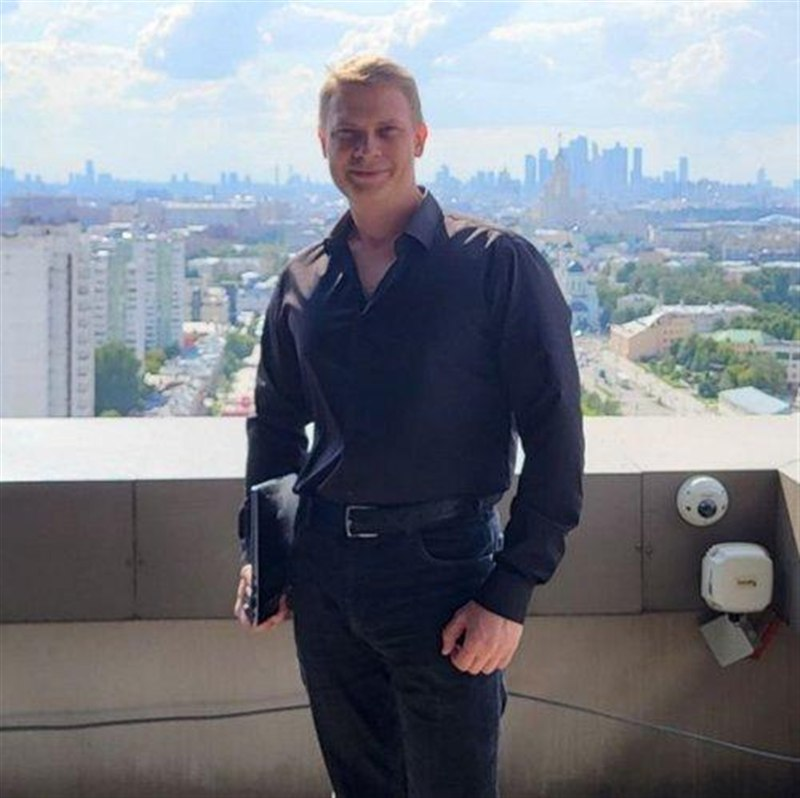

Внедряю ИИ во все сферы бизнеса — каждый рубль приносит прибыль
Внедряю искусственный интеллект сквозь весь бизнес: продажи, маркетинг, операции, производство, поддержку и финансы — не только ИТ. Проектирую целевые решения с ИИ-ядром и считаю эффект каждого рубля. Каждые 4–5 месяцев — измеримый результат в P&L. 250–400 млн ₽/год на проекте, ROI 250–300%, −42% OPEX. 15 лет, 11 компаний, 8 отраслей.

Компании теряют деньги в ИТ — и не видят, где
Нет прозрачности
Затраты на ИТ не привязаны к бизнес-результату, аллокация отсутствует — невозможно понять, что окупается, а что нет.
Рутина съедает бюджет
До 40% работы поддержки — ручные операции: сбор данных, отчёты на доработку, дублирование ввода. Каждая такая операция — прямые потери.
Инициативы без эффекта
Проекты запускаются без Business Case и KPI. Результат не измеряется — решения принимаются «на веру».
Чем я отличаюсь в цифровизации бизнеса
Не «внедрим LLM», а: «вот стоимость, вот эффект в P&L, вот окупаемость». Каждая инициатива — с цифрой.
Продажи, маркетинг, операции, поддержка, финансы: 76,9% охвата ИИ на Аэроклубе, ИИ-атлас на R-Vision — ИИ как управляемый актив всего бизнеса.
От среднего бизнеса до глобальной корпорации, в частных, полугосударственных и государственных структурах — выстраивал функции, процессы и вводил ИИ под задачи бизнеса.
От добычи (АЛРОСА, Казахмыс) до банков и госплатформ — переношу лучшие практики между отраслями.
Как из аудита получаются деньги: мой метод
Аудит · 2 недели
Разбираю процессы, данные и ИТ-ландшафт на предмет утечки денег: где ручная работа, дубли, простой, разбухшие затраты.
Business Case · 1 неделя
Считаю экономику до старта: ROI, срок окупаемости, KPI-модель и дорожную карту. Согласование решения на цифрах, а не «на веру».
Реализация · 4–6 месяцев
Управляю программой: команда нужного масштаба, вендоры, OKR/KPI, контроль эффекта. Промежуточные цифры видны в отчётности.
Масштабирование
Передаю устойчивый процесс: регламенты, обучение команды, тиражирование на другие направления. Эффект остаётся без моего участия.